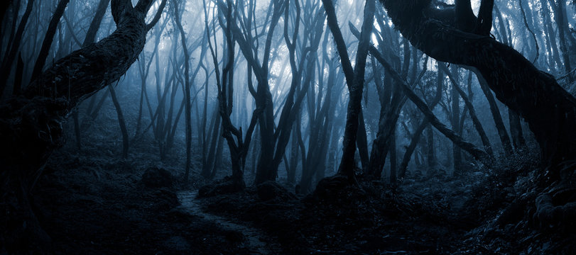

After a rather short walk down a barren lane you come across a forest shrouded in a gloomy sky. There are two paths both equally tempting, one goes through and the other around. They both seem an equal length from where you're standing.
Through
Around